0
Instalar o PyMOL
Antes da primeira linha de comando, o programa precisa estar na máquina. Há duas rotas gratuitas e elas não são intercambiáveis: a diferença está na licença, não no que o programa faz.
| Rota | Custo e licença | Uso permitido | Plataformas |
|---|---|---|---|
| Educational-use-only (Schrödinger) | Gratuito mediante cadastro. Licença emitida pelo Schrödinger License Manager e válida por prazo determinado | Apenas ensino: aula, exercício e figura de sala. Não cobre pesquisa nem publicação | Windows, macOS e Linux, com instalador gráfico |
| PyMOL open-source | Gratuito e sem cadastro. Código sob licença permissiva, mantido em github.com/schrodinger/pymol-open-source | Qualquer uso, incluindo pesquisa e publicação | Windows, macOS e Linux, via conda-forge ou pelo gerenciador de pacotes da distribuição |
| Academic ou Industry | Assinatura paga | Qualquer uso, com suporte técnico e plugins fechados | Windows, macOS e Linux |
Como escolher
Para acompanhar esta aula, a versão educacional basta e é a de instalação mais simples.
Para o trabalho que vira dissertação, artigo ou pôster, instale a versão open-source:
ela não tem restrição de uso e todos os comandos deste guia funcionam igualmente nas duas.
Nada impede ter as duas na mesma máquina.
# Rota 1: versao educacional, Windows, macOS ou Linux # 1. Cadastro https://pymol.org/edu/ # 2. Licenca chega por e-mail, arquivo .lic # 3. Instalador https://pymol.org/#download # 4. Ativacao Help > Install License File, dentro do PyMOL
AtençãoA licença educacional é explícita: cobre instrução em sala e trabalho de casa, e não cobre pesquisa acadêmica nem publicação. Figura que vai para artigo, dissertação ou pôster precisa da versão open-source ou de uma assinatura.
# Rota 2: open-source em qualquer sistema, via conda-forge # Instale antes o Miniforge: https://conda-forge.org/download/ conda create -n pymol -c conda-forge pymol-open-source conda activate pymol pymol
# Debian, Ubuntu e derivados sudo apt install pymol # Fedora e derivados sudo dnf install pymol # Arch Linux sudo pacman -S pymol
# confere versao e se a janela grafica abre pymol -cq -d "print(cmd.get_version()[0])" pymol -d "fetch 1hpv, async=0; show cartoon; util.cbc"
AtençãoEm máquina sem placa dedicada ou em acesso remoto, a janela pode abrir preta ou não abrir. Nesse caso rode
pymol -cq script.pml em modo sem janela, que é o mesmo modo usado pelo script de figuras da última seção, e veja também pymolwiki.org.1
A interface do PyMOL
Antes dos comandos, um mapa da janela. Saber onde cada coisa está é o que permite alternar entre clicar e digitar conforme convém: clicar para explorar, digitar para reproduzir.
| Região | O que contém | Uso típico |
|---|---|---|
| Menu superior | File, Edit, Build, Movie, Display, Setting, Scene, Mouse, Wizard, Plugin | File > Open, Setting > Edit All (busca qualquer setting pelo nome), Plugin (APBS, alinhamentos) |
| Linha de comando | Campo com o prompt PyMOL>, logo abaixo do menu | Onde todo comando deste guia é digitado. Setas para cima e para baixo percorrem o histórico |
| Painel de objetos (direita) | Um item por objeto e por seleção, com os botões A S H L C | Actions, Show, Hide, Label, Color. Clicar no nome liga e desliga o objeto |
| Barra inferior direita | Modo do mouse (3-Button Viewing ou Editing) e o campo Selecting | Selecting define se o clique seleciona átomo, resíduo, cadeia, objeto ou molécula |
| Barra inferior esquerda | Reset, Zoom, Orient, Draw, Ray, Unpick, Deselect, Rock, Get View | Atalhos para os comandos de câmera e renderização |
| Faixa de sequência (topo) | Sequência de aminoácidos, ativada por set seq_view, 1 ou Display > Sequence | Clicar em um resíduo o adiciona à seleção sele |
Princípio geral
Todo clique na interface gera o comando equivalente, que é impresso no painel de texto (tecle
Esc para alternar entre a janela 3D e o log). Essa é a forma mais eficiente de
aprender a sintaxe: faça pela interface, leia o comando gerado, digite o comando na próxima vez.
Com log_open aula.pml ativo, essa sequência de comandos fica gravada em um script
reproduzível.2
Preparar o ambiente
Ajustes feitos uma vez, no início da sessão. Em sala valem duplamente, porque há projetor, máquinas heterogêneas e alunos que ainda não dominam o mouse.
set seq_view, 1bg_color white set ray_opaque_background, 0
set orthoscopic, on set depth_cue, 0 set ray_shadows, 0
util.performance(100) # maquinas modestas ou projetor util.performance(0) # qualidade maxima para a figura final
viewport 1200, 900reinitialize3
Obter e carregar estruturas
O PyMOL baixa estruturas do PDB sem passar pelo navegador. É o ponto de partida natural e já introduz a distinção entre unidade assimétrica e montagem biológica.
fetch 1hpv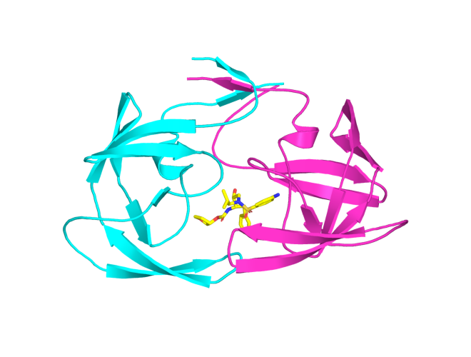
fetch 1hpv seguido de show cartoon e util.cbc. A protease do HIV-1 é um homodímero, com o inibidor amprenavir em amarelo no eixo de simetria.fetch 1hpv 1ubq 4hhb, async=0AtençãoSintoma clássico do esquecimento:
Selector-Error: Invalid selection name logo após um fetch dentro de um script.fetch 1hpv, type=pdb1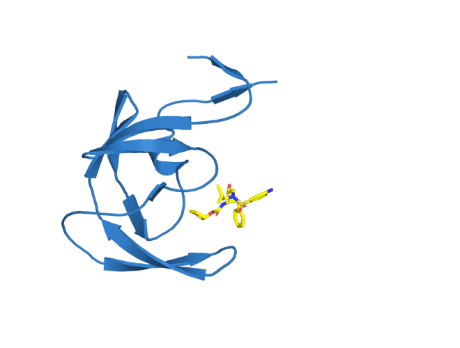
set assembly, 1 fetch 6lu7, async=0 split_states 6lu7
set fetch_path, /caminho/para/aulaload modelo.pdb, meu_modelo load predicao.cif, af_model
load https://alphafold.ebi.ac.uk/files/AF-P69905-F1-model_v4.pdb, hbb_afsave saida.pdb, polymer and chain A save aula.pse
AtençãoO .pse é específico do PyMOL. Para entregar coordenadas a outro programa, salve .pdb ou .cif.
5
Sintaxe de seleção
A linguagem de seleção é o núcleo do PyMOL: todo comando de representação, cor e medida opera sobre uma seleção. É o investimento com maior retorno de toda a aula.
| Identificador | Significado | Exemplo |
|---|---|---|
chain | Cadeia | chain A |
resi | Número do resíduo, aceita faixa e lista | resi 10-50+87 |
resn | Nome do resíduo | resn ARG+LYS |
name | Nome do átomo | name CA+CB |
elem | Elemento químico | elem Zn |
ss | Estrutura secundária (H, S, L) | ss H+S |
b, q | B-factor e ocupância | b < 30, q < 1 |
alt | Confôrmero alternativo | alt A+"" |
| Atalho | Seleciona |
|---|---|
polymer | Cadeia polimérica: proteína e ácido nucleico |
polymer.protein ou polymer.nucleic | Só proteína ou só ácido nucleico |
organic | Moléculas orgânicas pequenas: ligantes, cofatores, crioprotetores |
inorganic ou metals | Íons e sais, ou apenas metais |
solvent | Águas |
hydro | Hidrogênios |
backbone ou sidechain | Cadeia principal ou cadeia lateral |
donors ou acceptors | Doadores ou aceptores de ligação de hidrogênio |
hetatm | Registros HETATM do arquivo |
select sitio, byres (polymer within 5 of organic)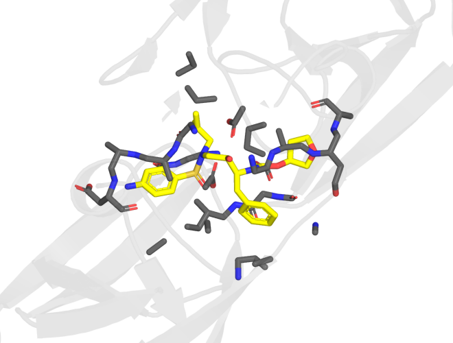
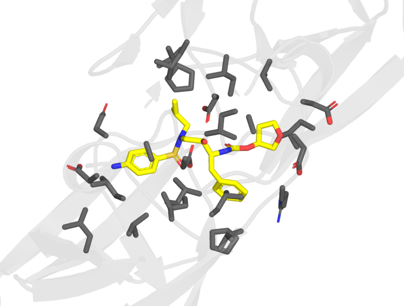
AtençãoRegra prática: quase toda seleção por distância deve ser envolvida em byres. Note ainda que
within inclui os átomos da própria referência quando satisfazem o critério, enquanto around os exclui.select interface, byres (chain A within 4.5 of chain B)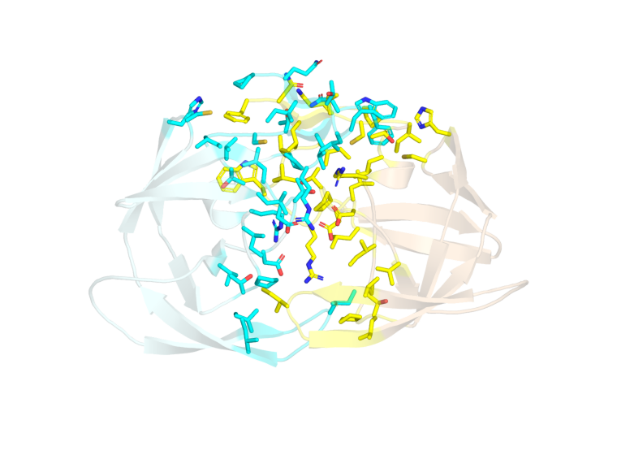
select flexivel, byres (name CA and b > 60) select confiavel, byres (name CA and b < 30)
select viz, byres (resi 25 around 5) select prox, byres ((resi 25 expand 4) and resn ARG+LYS)
/1hpv//A/25/CA
1hpv//A/25/
A/25-50/count_atoms polymer iterate name CA and chain A, print(resi, resn, round(b,1))
indicate resn HOH deselect
6
Modos de visualização
Cada representação privilegia uma informação e esconde outra. O objetivo é que o aluno escolha a representação em função da pergunta, e não por hábito.
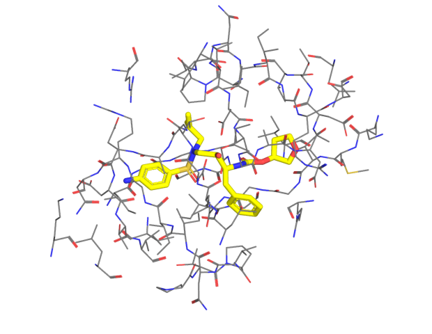
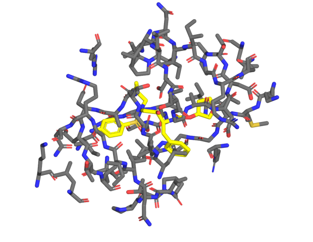
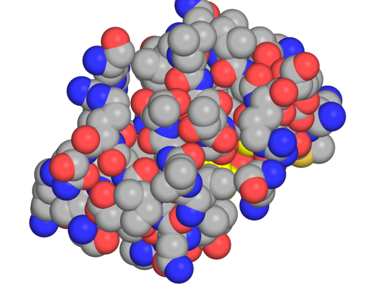
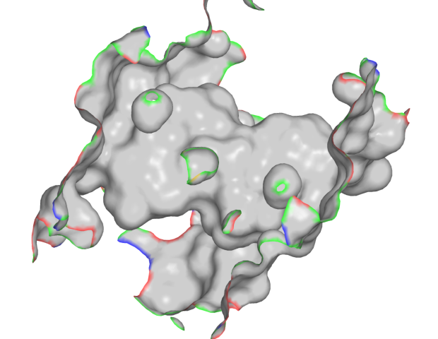
| Representação | Mostra | Quando usar |
|---|---|---|
cartoon | Topologia e estrutura secundária | Visão global do enovelamento; fundo de quase toda figura |
lines | Todos os átomos, traço fino | Inspeção rápida; barato computacionalmente |
sticks | Ligações e conectividade | Sítio ativo, ligante, cadeias laterais em detalhe |
spheres | Raio de van der Waals | Empacotamento, volume ocupado, contatos estéricos |
surface | Superfície molecular contínua | Forma, bolsos, propriedades físico-químicas da face acessível |
mesh ou dots | Superfície em malha ou em pontos | Mostrar superfície e conteúdo interno ao mesmo tempo |
ribbon | Traço fino pelos Cα | Sistemas muito grandes, onde cartoon fica pesado |
nb_spheres | Esferas para átomos sem ligação | Íons e águas, que em sticks ficam praticamente invisíveis |
hide everything show cartoon, polymer show sticks, organic show nb_spheres, inorganic
as cartoon, polymer show sticks, resi 25
set cartoon_side_chain_helper, 1 show cartoon, polymer show sticks, byres (polymer within 4.5 of organic) and not hydro
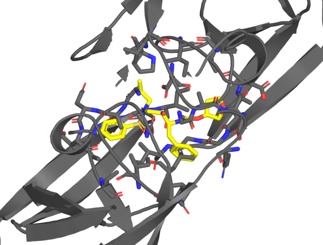
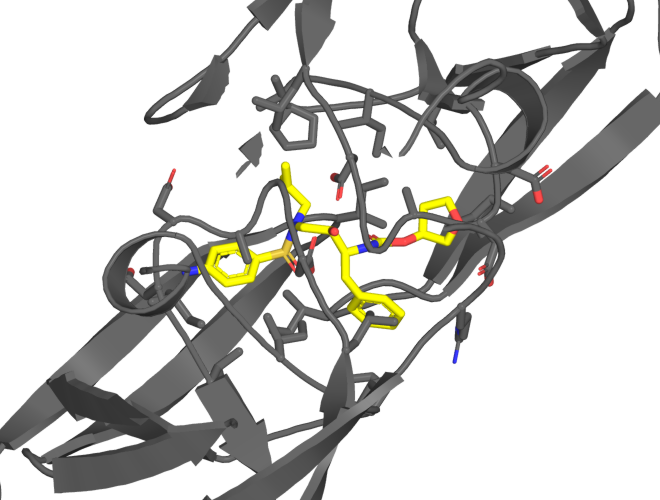
dss rebuild
show surface, polymer set transparency, 0.5 show cartoon, polymer
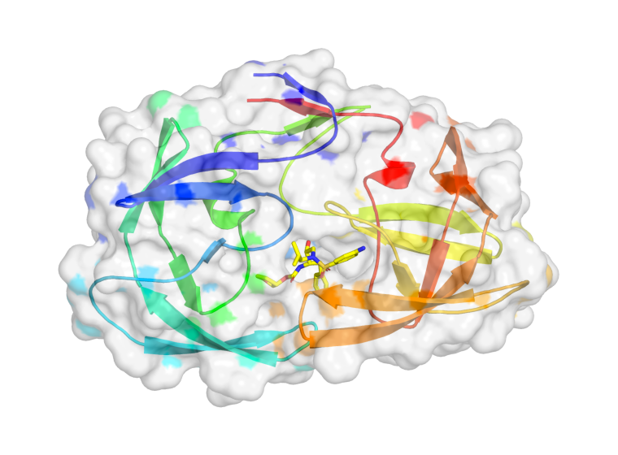
set solvent_radius, 1.4 rebuild set solvent_radius, 5.0 rebuild
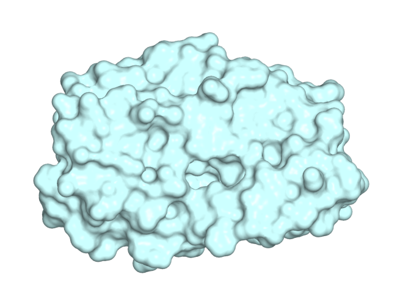
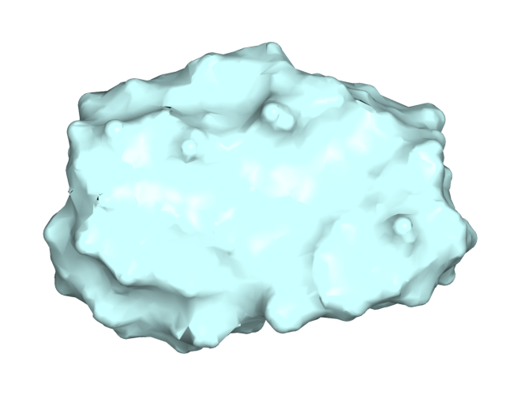
set surface_cavity_mode, 1 set surface_cavity_radius, 5 set surface_cavity_cutoff, -5 show surface, polymer rebuild
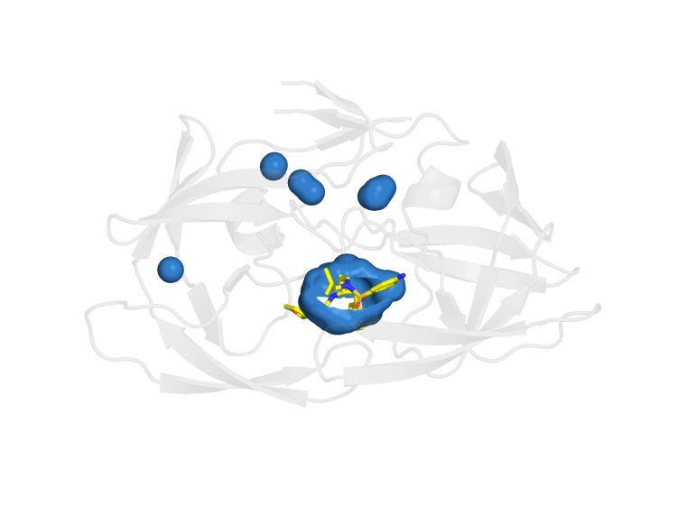
surface_cavity_mode 1, apenas as cavidades internas são renderizadas. A maior delas envolve o inibidor, em amarelo, no eixo de simetria do dímero.AtençãoÉ um recurso de visualização, não de análise: não fornece volume, ranking nem escore. Para isso, use fpocket, CASTp ou equivalente.
set ray_trace_mode, 1 set ray_trace_color, black set antialias, 2
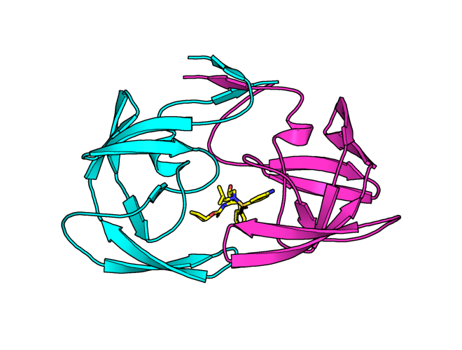
ray_trace_mode 1. O contorno preto separa as duas cadeias e destaca o ligante mesmo em projeção de baixo contraste.preset.publication("1hpv") preset.ball_and_stick("organic") preset.technical("1hpv")
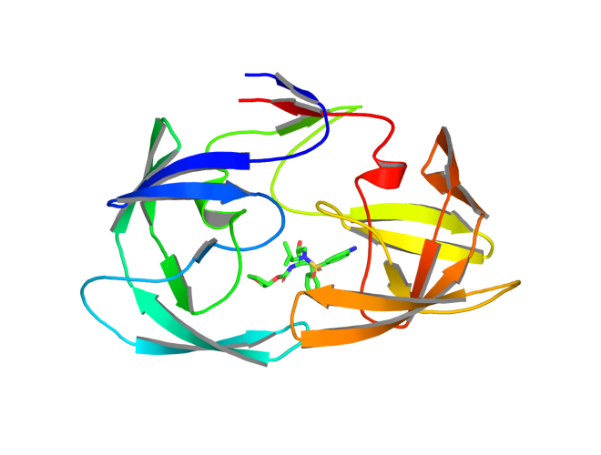
preset.publication: hélices estilizadas, iluminação e antialiasing ajustados em um único comando.7
Cores e esquemas de coloração
A cor é o canal por onde a propriedade físico-química é transmitida. Um esquema deliberado transforma uma figura bonita em um argumento científico.
color grey80, polymer util.cbc util.cbag("chain A") color atomic, not elem C
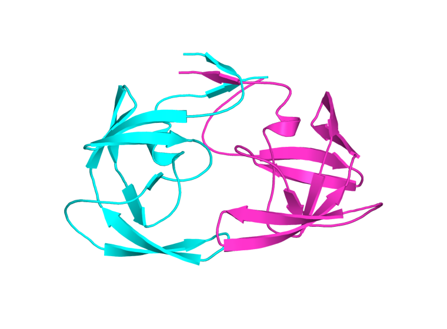
util.cbc, uma cor por cadeia, revelando imediatamente que a protease é um homodímero.spectrum count, rainbow, polymer and name CA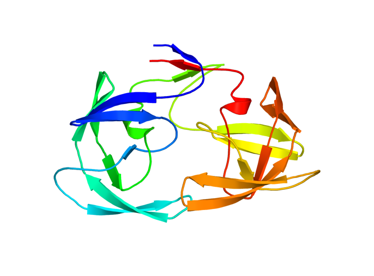
AtençãoRestringir a
name CA garante um gradiente por resíduo. Sem essa restrição o gradiente é por átomo e resíduos grandes recebem uma faixa maior de cor que os pequenos.# sem limites: cada objeto e normalizado pela propria faixa spectrum b, blue_white_red, cadeiaA and name CA spectrum b, blue_white_red, cadeiaB and name CA # com limites explicitos: as duas figuras passam a ser comparaveis spectrum b, blue_white_red, cadeiaA and name CA, 15, 45 spectrum b, blue_white_red, cadeiaB and name CA, 15, 45
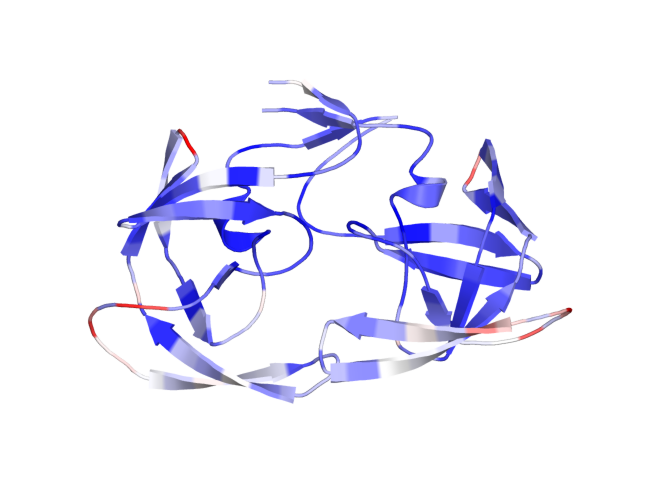
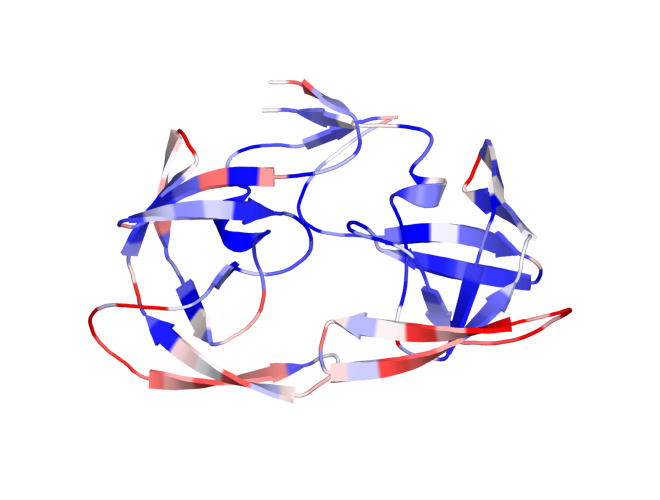
set_color meucinza, [0.85, 0.85, 0.85] set_color laranja_kd, [0.90, 0.55, 0.15] color meucinza, elem C
Paletas úteis para spectrum
rainbow, rainbow_rev, blue_white_red, red_white_blue,
blue_white_orange, yellow_white_marine, green_white_magenta,
white_red. Para dados divergentes em torno de zero, como potencial eletrostático ou
hidrofobicidade de Kyte-Doolittle, use sempre uma rampa com branco no centro e limites simétricos.
Para dados apenas positivos, como SASA relativa ou desvio por resíduo, use uma rampa sequencial
como white_red.8
Perfil físico-químico I, hidrofobicidade
O objetivo é tornar visível por que a proteína se enovela: o núcleo apolar, a superfície polar e as exceções, que são as faces hidrofóbicas expostas. Estas quase sempre indicam sítio de interação, de ligação ou região transmembrana.
select apolar, resn ALA+VAL+ILE+LEU+MET+PHE+TRP+PRO+GLY+CYS select polar, resn SER+THR+ASN+GLN+TYR+HIS select acido, resn ASP+GLU select basico, resn ARG+LYS hide everything show surface, polymer color grey90, polymer color orange, apolar color palecyan, polar color firebrick, acido color marine, basico deselect
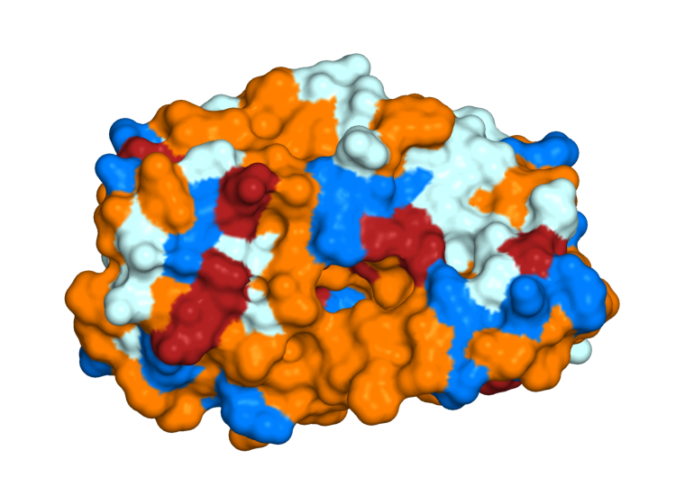
AtençãoA classificação binária é uma simplificação. Glicina não é hidrofóbica em sentido termodinâmico, e triptofano e tirosina são anfipáticos, com anel apolar e grupo polar na mesma cadeia lateral. Vale explicitar isso e passar para a escala contínua abaixo.
# Escala Kyte-Doolittle gravada no campo B e mapeada em cor alter polymer, b = 0.0 alter polymer and resn ILE, b = 4.5 alter polymer and resn VAL, b = 4.2 alter polymer and resn LEU, b = 3.8 alter polymer and resn PHE, b = 2.8 alter polymer and resn CYS, b = 2.5 alter polymer and resn MET, b = 1.9 alter polymer and resn ALA, b = 1.8 alter polymer and resn GLY, b = -0.4 alter polymer and resn THR, b = -0.7 alter polymer and resn SER, b = -0.8 alter polymer and resn TRP, b = -0.9 alter polymer and resn TYR, b = -1.3 alter polymer and resn PRO, b = -1.6 alter polymer and resn HIS, b = -3.2 alter polymer and resn GLU, b = -3.5 alter polymer and resn GLN, b = -3.5 alter polymer and resn ASP, b = -3.5 alter polymer and resn ASN, b = -3.5 alter polymer and resn LYS, b = -3.9 alter polymer and resn ARG, b = -4.5 rebuild show surface, polymer spectrum b, blue_white_orange, polymer, -4.5, 4.5
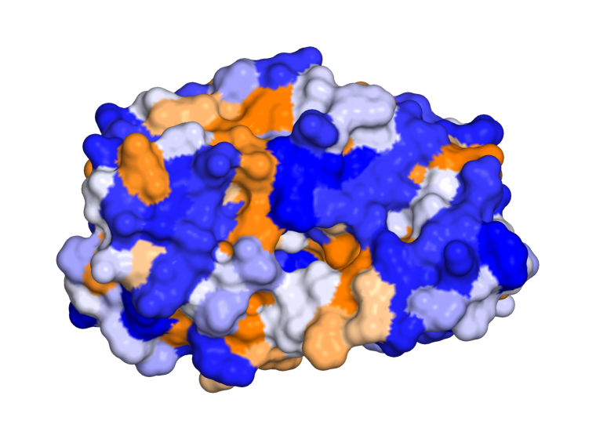
AtençãoEste bloco destrói o B-factor original. Trabalhe sobre uma cópia (
create tmp, 1hpv) se ainda precisar dos valores cristalográficos, ou recarregue a estrutura depois.show surface, polymer set transparency, 0.3 color grey90, polymer color orange, resn ALA+VAL+ILE+LEU+MET+PHE+TRP+PRO+CYS show sticks, resn ALA+VAL+ILE+LEU+MET+PHE+TRP+CYS and sidechain and not hydro clip slab, 14
9
Perfil físico-químico II, carga e potencial eletrostático
Da coloração qualitativa por resíduos carregados ao mapa de potencial eletrostático. Boa oportunidade para discutir o que cada nível de aproximação de fato representa.
hide everything show surface, polymer color white, polymer color firebrick, resn ASP+GLU color marine, resn ARG+LYS color palecyan, resn HIS
turn y, 180. A distribuição de carga é claramente diferente da face frontal.create prot, polymer util.protein_vacuum_esp("prot", mode=2, quiet=0) # a rampa criada automaticamente chama-se prot_e_pot e a superficie # fica no objeto prot_e_chg; recrie a rampa com limites explicitos ramp_new prot_e_pot, prot_e_map, [-15, 0, 15], [red, white, blue] set surface_color, prot_e_pot, prot_e_chg set surface_ramp_above_mode, 1
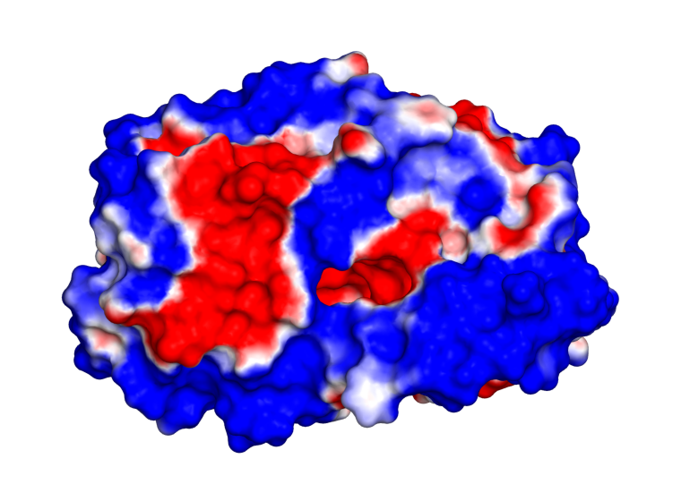
AtençãoTrês armadilhas. O primeiro argumento tem de ser o nome de um objeto, não uma expressão de seleção. O objeto original é consumido e substituído por NOME_e_chg, de modo que desabilitá-lo por engano deixa a tela em branco. E o resultado é qualitativo: Coulomb em vácuo ignora a blindagem pelo solvente e a força iônica, superestimando o potencial a longa distância.
APBS, o mapa quantitativo
No PyMOL 2.x: menu
Plugin > APBS Electrostatics. O plugin prepara a estrutura com
pdb2pqr (adiciona hidrogênios, atribui estados de protonação e cargas), resolve a equação de
Poisson-Boltzmann linearizada e devolve um mapa que se aplica à superfície com os mesmos comandos
ramp_new e set surface_color acima. Vale explicar em sala que a diferença
para o mapa em vácuo não é cosmética: o cálculo de Poisson-Boltzmann modela solvente contínuo com
constante dielétrica alta e íons em solução, e é esse o resultado que se reporta em publicação.
No bundle oficial do PyMOL para macOS o executável apbs já vem incluído em
PyMOL.app/Contents/bin, de modo que o plugin funciona sem instalação adicional.select ponte_salina, byres ((resn ASP+GLU and name OD1+OD2+OE1+OE2) \ within 4 of (resn ARG+LYS and name NH1+NH2+NE+NZ)) show sticks, ponte_salina and sidechain and not hydro distance ps, (resn ASP+GLU and name OD1+OD2+OE1+OE2), \ (resn ARG+LYS and name NH1+NH2+NE+NZ), 4.0
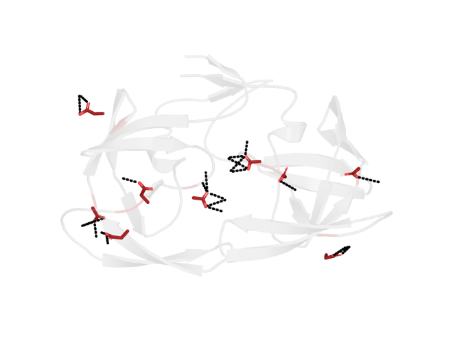
10
Perfil físico-químico III, exposição ao solvente
Da percepção visual de enterramento ao número. A área acessível ao solvente é a variável quantitativa mais acessível dentro do PyMOL e conecta a figura à termodinâmica de associação.
set dot_solvent, 1 set dot_density, 3 print cmd.get_area("polymer")
Atençãoget_area exige que a seleção esteja contida em um único objeto; caso contrário retorna
Selection must be within a single object. Hidrogênios alteram o valor, então padronize se vai calcular com ou sem eles.# Area enterrada na interface (BSA), por monomero create cadA, 1hpv and chain A create cadB, 1hpv and chain B create dimero, 1hpv and chain A+B set dot_solvent, 1 print (cmd.get_area("cadA") + cmd.get_area("cadB") - cmd.get_area("dimero")) / 2.0
AtençãoA divisão por dois converte a área total enterrada nas duas superfícies em área por monômero, que é a convenção mais comum. Deixe explícito qual convenção está em uso.
python from pymol import cmd # SASA relativa por residuo: fracao da area do mesmo residuo isolado. # Gravada no campo B e mapeada em cor (branco = enterrado, vermelho = exposto) cmd.set("dot_solvent", 1) cmd.set("dot_density", 3) rel = cmd.get_sasa_relative("1hpv") for (obj, segi, chain, resi), val in rel.items(): cmd.alter(f"/{obj}/{segi}/{chain}/{resi}", f"b={val}") cmd.rebuild() cmd.show("surface", "polymer") cmd.spectrum("b", "white_red", "polymer", 0.0, 1.0) python end
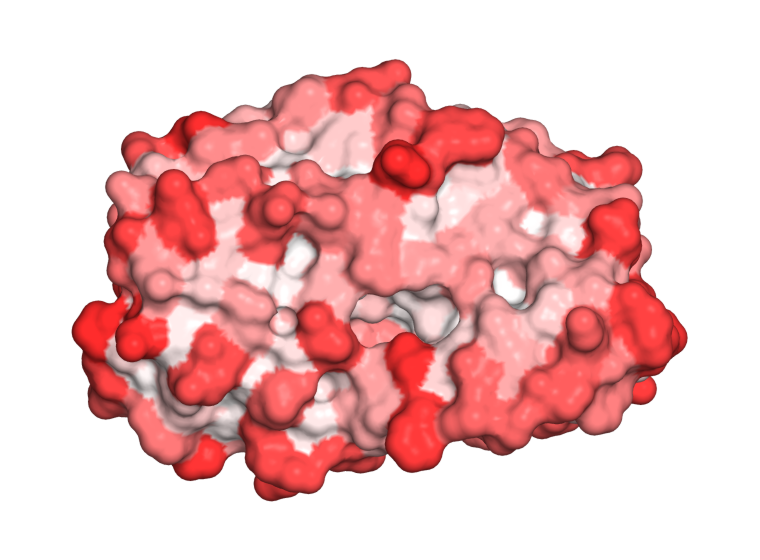
AtençãoDisponível a partir do PyMOL 2.3. Atenção à sintaxe da macro: o formato correto é
/objeto/segi/cadeia/residuo. Escrever as barras fora de ordem produz dezenas de Selector-Error: Malformed selection sem que nada seja alterado. Como nos blocos anteriores, o campo B original é sobrescrito.set dot_solvent, 1 print cmd.get_area("resi 25 and sidechain") print cmd.get_area("byres (polymer within 5 of organic)")
11
Interações: ligações de hidrogênio, contatos e bolsos
Da visão geral de propriedades para a geometria dos contatos individuais. É aqui que a aula liga estrutura a mecanismo.
distance hb, polymer, organic, 3.5, mode=2 set dash_color, black set dash_width, 3.5 hide labels, hb
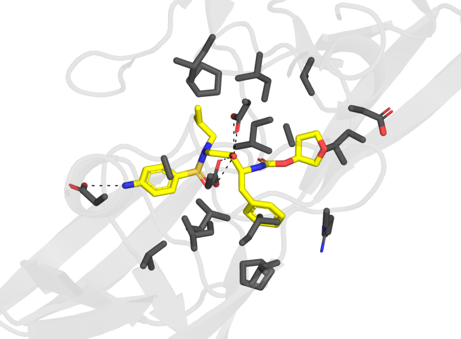
mode=2 e corte de 3,5 Å. Rótulos ocultos para legibilidade.set h_bond_cutoff_center, 3.6 set h_bond_cutoff_edge, 3.2 set h_bond_max_angle, 63
h_add polymer distance hb, polymer, organic, mode=2 remove hydro
Atençãoh_add usa geometria idealizada; não otimiza a orientação de OH e NH3+ nem resolve o flip de Asn, Gln e His. Para trabalho quantitativo, use pdb2pqr, reduce ou MolProbity.
distance d1, /1hpv//A/25/OD1, /1hpv//B/25/OD2 angle a1, /1hpv//A/25/CG, /1hpv//A/25/OD1, /1hpv//A/25/OD2 dihedral chi1, /1hpv//A/25/N, /1hpv//A/25/CA, \ /1hpv//A/25/CB, /1hpv//A/25/CG
AtençãoCada seleção precisa resolver para exatamente um átomo. Com dois objetos carregados,
resi 25 and name CA casa em ambos e retorna More than one atom found; prefixe sempre com o nome do objeto.select contatos, byres (chain A within 4.0 of chain B) show sticks, contatos and sidechain and not hydro util.cbac("contatos and chain A") util.cbay("contatos and chain B") distance polares, chain A, chain B, 3.5, mode=2
show surface, byres (polymer within 9 of organic) set transparency, 0.1 show sticks, organic util.cbay("organic") orient organic zoom organic, 5
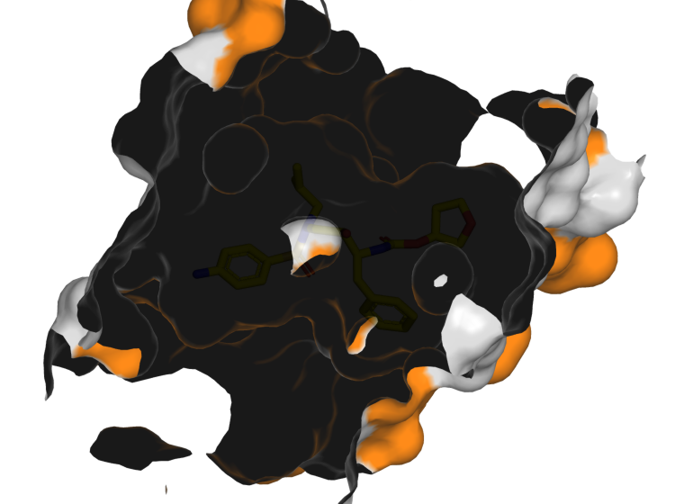
12
Avaliação de modelos
O bloco mais próximo do trabalho cotidiano de modelagem: superposição, RMSD, confiança por resíduo e detecção de problemas geométricos.
align modelo, referencia super modelo, referencia cealign referencia, modelo
align modelo, referencia, cycles=0 align modelo////CA, referencia////CA
Atençãoalign retorna sete valores: RMSD após refinamento, número de átomos alinhados, número de ciclos, RMSD antes do refinamento, número de átomos antes, escore do alinhamento de sequência e número de resíduos alinhados. Em Python:
cmd.align('modelo','referencia').rms_cur modelo, referenciapython from pymol import cmd # Desvio por residuo apos superposicao, gravado em B e mapeado em cor cmd.align("modelo", "referencia") for at in cmd.get_model("modelo and name CA").atom: sel_m = f"modelo//{at.chain}/{at.resi}/CA" sel_r = f"referencia//{at.chain}/{at.resi}/CA" if cmd.count_atoms(sel_r) == 1: d = cmd.get_distance(sel_m, sel_r) cmd.alter(f"modelo//{at.chain}/{at.resi}/", f"b={d}") cmd.rebuild() cmd.show("cartoon", "modelo") cmd.spectrum("b", "white_red", "modelo and polymer", 0.0, 2.0) python end
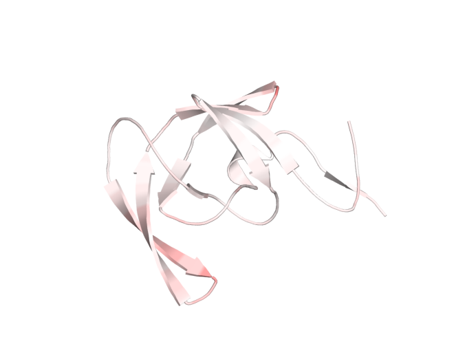
# pLDDT do AlphaFold, gravado no campo B color grey60, polymer color orange, polymer and b < 50 color yellow, polymer and b > 50 and b < 70 color skyblue, polymer and b > 70 and b < 90 color blue, polymer and b > 90
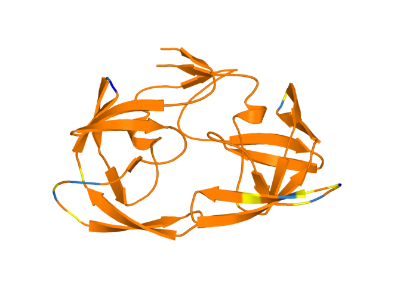
AtençãoCuidado com a inversão de sentido. No arquivo cristalográfico, B alto significa incerteza; no arquivo do AlphaFold, B alto significa confiança. Verifique sempre a origem do arquivo antes de interpretar uma coloração por B.
cartoon putty, polymer set cartoon_putty_scale_min, 0.5 set cartoon_putty_scale_max, 4.0 set cartoon_putty_transform, 0 spectrum b, blue_white_red, polymer and name CA rebuild
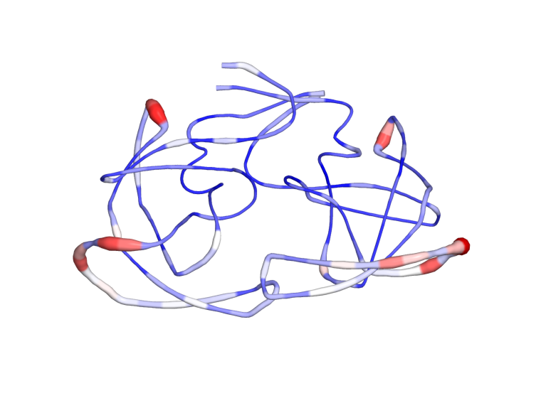
AtençãoExige variação real nos valores de B. Se todos forem iguais, o PyMOL emite
invalid putty settings (division by zero) e nada é desenhado.python from pymol import cmd # Contatos estericos: atomos pesados de residuos nao vizinhos com # sobreposicao de raios de van der Waals acima de 0.4 A sel = "polymer and not hydro" info = {} cmd.iterate(sel, "info[index] = (chain, resv, name, vdw)", space={"info": info}) vistos, clashes = set(), [] for (o1, i1), (o2, i2) in cmd.find_pairs(sel, sel, cutoff=4.0, angle=0): if (i2, i1) in vistos: continue vistos.add((i1, i2)) c1, r1, n1, v1 = info[i1] c2, r2, n2, v2 = info[i2] if c1 == c2 and abs(r1 - r2) < 2: continue # ignora vizinhos na cadeia d = cmd.get_distance(f"{o1} and index {i1}", f"{o2} and index {i2}") ov = (v1 + v2) - d if ov > 0.4: clashes.append((f"{c1}/{r1}/{n1}", f"{c2}/{r2}/{n2}", round(d, 2), round(ov, 2))) print(len(clashes), "contatos com sobreposicao > 0.4 A") for c in sorted(clashes, key=lambda x: -x[3])[:15]: print(c) python end
AtençãoÉ uma triagem rápida e não substitui validação completa. Para relatório formal use MolProbity, que também avalia rotâmeros, Ramachandran e flips de Asn, Gln e His.
python from pymol import cmd pp = cmd.get_phipsi("polymer and name CA") for k in sorted(pp): print(k, [round(v, 1) for v in pp[k]]) python end
sculpt_activate modelo sculpt_iterate modelo, cycles=200 sculpt_deactivate modelo
AtençãoO sculpting é um campo de força simplificado, sem eletrostática nem solvente. Serve para limpeza cosmética e demonstração; refinamento sério exige GROMACS, OpenMM, Amber ou equivalente.
13
Renderização, exportação e automação
Como transformar a tela em figura utilizável, e como não repetir amanhã o trabalho de hoje.
png figura.png, width=2400, height=1800, dpi=300, ray=1set ray_opaque_background, 0 set ray_shadows, 0 set antialias, 2 ray 2400, 1800 png figura.png
@aula.pml run analise.py log_open aula_log.pml
AtençãoDentro de um .pml, sempre use fetch com async=0. Lembre também que o diretório de trabalho é aquele de onde o PyMOL foi iniciado, não o do script.
# em ~/.pymolrc alias sitio, hide everything; show cartoon, polymer; show sticks, organic; \ set cartoon_side_chain_helper, 1; orient organic; zoom organic, 5 alias plddt, color grey60, polymer; color orange, polymer and b < 50; \ color yellow, polymer and b > 50 and b < 70; \ color skyblue, polymer and b > 70 and b < 90; color blue, polymer and b > 90 set_key F3, cmd.turn("y", 90)
14
Armadilhas frequentes
Erros que aparecem em quase toda turma e que vale antecipar.
| Sintoma | Causa | Correção |
|---|---|---|
| A molécula desapareceu da tela | Planos de corte movidos pela roda do mouse | clip slab, 200 seguido de reset ou zoom |
Selector-Error: Invalid selection name logo após um fetch em script | Download assíncrono, o objeto ainda não existe | fetch 1hpv, async=0 |
| Cartoon todo em loop, sem hélices nem folhas | Arquivo de modelo sem registros HELIX e SHEET | dss |
| Cadeias laterais atravessadas pelo cartoon | Cartoon desenhado sobre a cadeia principal em sticks | set cartoon_side_chain_helper, 1 |
| Cadeias laterais cortadas ao meio | Seleção por distância sem expansão para o resíduo | Envolver a expressão em byres (...) |
Selection must be within a single object | get_area recebeu seleção abrangendo mais de um objeto | Restringir ao objeto ou criar um objeto novo com create |
More than one atom found em distance ou dihedral | Seleção casa com átomos homônimos em vários objetos | Usar macro com o nome do objeto: /1hpv//A/25/CA |
Dezenas de Malformed selection em um loop de alter | Macro montada com o número errado de barras | Formato correto: /objeto/segi/cadeia/residuo |
| Tela em branco depois de gerar o mapa eletrostático | O objeto com a superfície é NOME_e_chg, e não NOME_e_pot, que é a rampa | Habilitar NOME_e_chg |
| Duas figuras de B-factor parecem comparáveis mas não são | spectrum sem limites normaliza por objeto | spectrum b, blue_white_red, sele, 20, 80 |
| Coloração por B-factor com significado invertido | Arquivo do AlphaFold, em que B contém pLDDT e alto é bom | Verificar a origem do arquivo antes de interpretar |
| B-factor original perdido | Blocos de Kyte-Doolittle ou SASA sobrescrevem o campo B | Trabalhar sobre create tmp, obj ou recarregar |
| RMSD suspeitosamente baixo | align descarta outliers por padrão | align a, b, cycles=0 e reportar o número de átomos alinhados |
| O dímero não aparece | Carregada a unidade assimétrica, não a montagem biológica | fetch CODIGO, type=pdb1 ou set assembly, 1 |
| Superfície demora minutos para aparecer | Estrutura grande com surface_quality 1 | set surface_quality, 0 e renderizar só a região de interesse |
15
Roteiro sugerido para a aula
Sequência de blocos que constrói o argumento do global ao local, terminando na avaliação do modelo. Cada bloco vira uma cena armazenada, navegável com Page Up e Page Down.
# --------------------------------------------------------------- # Aula de visualizacao e propriedades fisico-quimicas # Curso de Bioinformatica Basica, 18 a 20 de agosto de 2026 # Estrutura: protease do HIV-1 com inibidor (dimero + ligante) # --------------------------------------------------------------- # --- Bloco 1: primeiro contato --- reinitialize set seq_view, 1 bg_color white set orthoscopic, on fetch 1hpv, async=0 remove solvent hide everything show cartoon, polymer show sticks, organic util.cbc util.cbay("organic") orient polymer scene 01_global, store # --- Bloco 2: topologia e simetria --- spectrum count, rainbow, polymer and name CA scene 02_topologia, store # --- Bloco 3: forma e superficie --- show surface, polymer set transparency, 0.5 scene 03_superficie, store # --- Bloco 4: perfil fisico-quimico --- select apolar, resn ALA+VAL+ILE+LEU+MET+PHE+TRP+PRO+GLY+CYS select acido, resn ASP+GLU select basico, resn ARG+LYS set transparency, 0 color grey90, polymer color orange, apolar color firebrick, acido color marine, basico deselect scene 04_fisicoquimico, store # --- Bloco 5: nucleo hidrofobico em corte --- set transparency, 0.3 show sticks, apolar and sidechain and not hydro clip slab, 14 scene 05_nucleo, store # --- Bloco 6: bolso de ligacao --- clip slab, 200 hide surface show surface, byres (polymer within 9 of organic) set transparency, 0.1 orient organic zoom organic, 5 scene 06_bolso, store # --- Bloco 7: interacoes no sitio --- hide surface set cartoon_side_chain_helper, 1 show sticks, byres (polymer within 4.2 of organic) and sidechain and not hydro distance hb, polymer, organic, 3.5, mode=2 hide labels, hb set dash_color, black scene 07_interacoes, store save aula.pse # Navegue entre as cenas com Page Up e Page Down
# reproduz localmente todas as 39 figuras deste guia pymol -cq gerar_figuras_aula.py # no macOS, se o comando pymol nao estiver no PATH: /Applications/PyMOL.app/Contents/bin/pymol -cq gerar_figuras_aula.py
AtençãoO script usa
cmd.fetch, portanto precisa de rede na primeira execução. A partir da segunda, o arquivo vem do cache definido por fetch_path.